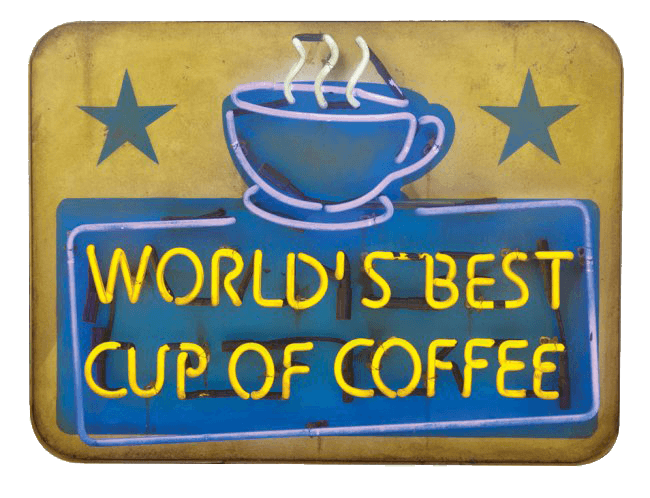

Have you ever seen that “World’s Best Cup of Coffee” sign, and believed it? Of course not! There are thousands of those signs, all claiming the same thing.
The problem is, how do you, the customer, truly find the best cup of coffee?
This type of problem occurs everyday inside of company marketing departments. As a marketing major myself, I was taught all the tips and tricks to get
people to buy something, regardless of the quality or even the product itself. The only problem is that these traditional tactics keep great brands stuck
in the forest of mediocre ones, because everyone is making the same claim.
Customers are becoming more and more hesitant in trusting the “white noise” of marketing tactics, and are turning to each other for advice. One good review
for a product is significantly more trusted than a company slogan claiming the same thing. If your friend tells you, “I finally found the BEST cup of
coffee!,” you are going to trust their opinion a thousand times more than the sign outside the coffee shop. Customers want hard evidence, and not even the
brightest and biggest signs will beat out a personal recommendation.
Today, Instagram has reached 80 MILLION POSTS A DAY. People all over the world are sharing their lives through pictures; sharing their new purchases, the
shoes they use for running, the concerts they go to, the bars and restaurants they frequent, and where they stay when they travel. They hashtag, they tag
their location, and share with the world their personal recommendations and experiences.
Companies with personal reviews receive higher sales numbers, more repeat business, and stronger brand loyalty, but only a tiny percentage of customers are
going back to their original purchase site to give a review. Do you know what they do instead? They take a picture, add a filter, put down a few related
hashtags, and ADD IT TO INSTAGRAM. The review is already there, but how does the company find it and show it to other customers?
Now, let’s say you are a coffee company that has a loyal fanbase obsessed with your super cool and unique Vanilla Latte. You have cool foam art, and your
cups have special seasonal designs on them. More importantly, you have loyal fans who are posting pictures in Instagram about your cool foam art and your
special seasonal cup designs. How you do find those images to add to your website, to show potential customers how amazing you truly are?
This is where Postcentive comes in.
Postcentive helps brands embed a feed of Instagram posts to their website, giving customers those desperately wanted peer reviews. Postcentive analyzes the
hashtags, the common text, and location of the posts to find truly relevant photos. Then filters out negative and irrelevant images, so that your feed is
tailored to show a specific product line, event, location, and more.
Your coffee company now has a site that doesn’t claim to have the World’s Best Cup of Coffee, you have a site that shows your customers believe you do.
People are inspired by the pictures, want their own cool Vanilla Latte with fancy foam art and a fancy cup, so they stop by your shop. When these customers
post their own picture to Instagram, you have now reached their personal networks, as well giving a better experience to web traffic. Suddenly, more coffee
lovers see their picture, and give your customers who post pictures more Instagram viewership. Your new customer feels recognized and appreciated for their
brand loyalty, making them more inclined to tell their friends, and post future pictures.
Now, on the company side, it’s not just about engagement, it’s about analytics. If you are doing something right, you want to know why and how to make it
even better. If you are doing something wrong, you want to address it as quick as possible. If you are planning out for future changes, you want to know
which products, events, locations, etc. are trending positively or negatively. Postcentive lets your coffee shop know which customers post about you
frequently, so you can reach out and make them a Brand Ambassador. On the other side, if someone gets a burnt cup of coffee, Postcentive analytics give you
quick access so you can reach out with a free gift card. If you’re thinking about taking your Mocha Latte off the menu, Postcentive can track the positive
and negative posts to help you make a decision.
Your great reviews are going to increase your sales, create more repeat business, and give you stronger brand loyalty. The best part? Those reviews already
exist.
Postcentive helps you USE them.